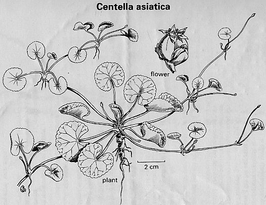

Centella asiatica Linn.,
Taxonomic Details

----- Correct Name
----- Classification
----- Synonyms
----- Common Names
Other Biological Details
----- Habit and Habitat
----- Diagnostic Features
----- Reproductive Biology/ Breeding Behavior
----------- Floral and seed biology
----------- Mode of pollination and seed dispersal
----------- Genetic variability
----- Germplasm Characterization
----- Agro technology
Economic Potential and Uses
--------- Utilization
--------- Pharmacology
--------- Chemistry
--------- Pharmaceutical and Toxicology
--------- Produce and Products
------- Economic Potential to the Country
Miscellaneous Information
Literature
Taxonomic Details
Correct Name : Centella asiatica Linn.,


Family: Apiaceae
Synonyms: Hydrocotyle asiatica L.,
Common Names:
English: Indian Pennywort, Thick-lived Pennywort
Hindi: Brahmamanduki, Khilakhudi
Assamese: Mani-muni
Gujarati: Barmi
Sanskriti: Bhekaparni, Bheki, Brahmamanduki, Darduchhada, Divya, Mahaushadhi, Mandukaparni, Mandukarparnika, Manduki, Supriya, Tvashti
Urdu: Barhmi.
Bengali: Brahmanduki, Tholkuri, Thankuni
Malayalam: Kodagam, Kutakam, Muthal
Tamil: Babassa, Vallarai, Vallari
Telugu: Babassa, Bekaparnamu, Bokkudu
Marathi: Brahmi, Karinga, Karivama
Other Biological Details
HABIT & HABITAT
Prostrate or creeping herb. It is found through out India.
Availability :
Specimen examined:
Jammu & Kashmir: Papnala, 10.08.1986, P.K. Hajra, 82373 (BSD); Himachal Pradesh: Kulu valley, Nagrota, 03.06.1950, S.K. Jain &R.C. Bharadwaja, (Acc. No. 113831) (DD); From Kakhar to Rewaban, Mandi dist., 16.05.1959, Srivastava & Party, 59663 (LWG); Hatkoti, Mahasu dist., 1500 m, 14.07.1965, N.C. Nair, 35757 (BSD); Punjab: Rey-River bank, Talwara dist., 23.04.1972, O.P. Mishra, 47189 (BSD); Uttar Pradesh: Niranjanpur, Dehra Dun, 200 m, 20.08. 1964, N.P. Singh, 31928 (BSD); Dehradun, October 1888,J.F. Duthie, 7637 (DD); Amrat Dhara, Manendragarh, 24.03.1998, P.K.Singh, 475 (LWG); Bihar: Garbordhan forest, Champaran dist., 17.11.1963, B.V. Shetty, (Acc. No. 54874) (LWG); West Bengal: Royal Botanic Garden, Calcutta, July 1949, S.K.Jain, s. n. (DD); Darjeeling, 04.05.1962, Kaul & Party, 69936 (LWG); Assam: Chand mari, Gauhati, 02.06.1958, Nayar & Party, 51155 (LWG); Orissa: Puldumer, Kalahandi dist., 634 m, H.F.Mooney, 2438 (DD); Sakshigopal, Puri dist., 04.03.1959, Srivastava & Party, 58141 (LWG); Andhra Pradesh: Hyderabad, 18.08.1950, s. legit., (Acc. No. 13929) (LWG); Tamil Nadu: Shrervani forest, Coimbatore dist., 10.03.1900, Gupta, Singh & Party, EBH-7015 (LWG); Maharashtra: khandala west ghat, 21.04.42, H. Santapau, 1188 (DD); Khandala, Bombay, 15.06.1959, Srivastava & Uma Shankar, 61616, (LWG); Gujarat: Sardar togh, Junagarh dist., 22.09.1953, Raizada, (Acc. No. 116171) (DD); Rajasthan: Kota, 17.04.1969, V. Singh, 91055 (LWG); Madhya Pradesh: Panchamari, 18.08.1969, Harion Sankar, 83378 (LWG); Andaman & Nicobar Islands: Maya Bundar, 26.02.1957, S.K. Seth, 25273 (DD); Port Blair, 20.03.1961, Saran & Party, 78719 (LWG).
Conservation/ Threat Status :
DIAGNOSTIC FEATURES:
Stem long, slender coming off from leaf-axils of a vertical rootstock, often reddish, internodes long, rooting at nodes. Leaves 1-3 from each node, orbicular, reniform, 1.3-6.3 cm in diam., rather broader than long, more or less cupped, base deeply cordate, entire or shallowly crenate along margin, glabrous on both surfaces; petioles variable in length, 7.5-15 cm long or more, channelled, glabrous or nearly so; stipules short, adnate to petioles forming a sheathing base. Flowers in fascicled umbels, each umbel consisting of 3-4 pink, sessile flowers; peduncles pubescent or glabrous, short, pink; bract ovate, acute. Fruit 4 mm long, ovoid, hard, with thickened pericarp, reticulately-rugose, often crowned by persistent petals, primary and secondary ridges distinct.
REPRODUCTIVE BIOLOGY
BREEDING BEHAVIOR:
Pollinators:
Phenology
Seed Biology :
Seed Germination :
Cultivation:
It can be propogated both by seeds
and vegetative means.
MAJOR PEST AND DISEASES:
Pests:
Diseases:
Economic Potential and Uses
Parts Used:
Plants.
Uses:
In Ayurveda system
of medicine plants are used as laxative, cooling, alexiteric, antipyretic,
appetiser and tonic. It also improves memory, voice and useful in lecucoderma,
urinary discharge, blood diseases, bronchitis, inflammations, asthma, small pox
and fever.
In Unani system of medicine whole plant is used as soporific, sedative to the nerve, tonic, cardio tonic, stomachic, carminative and diuretic. It is also useful in hiccough, asthma, bronchitis, scalding of urine, headache and appetite.